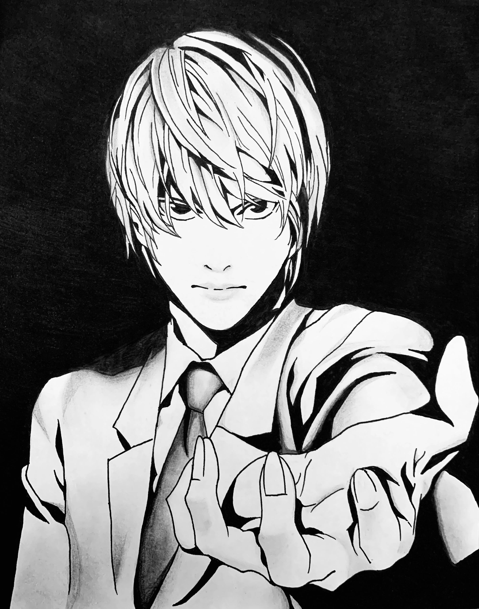
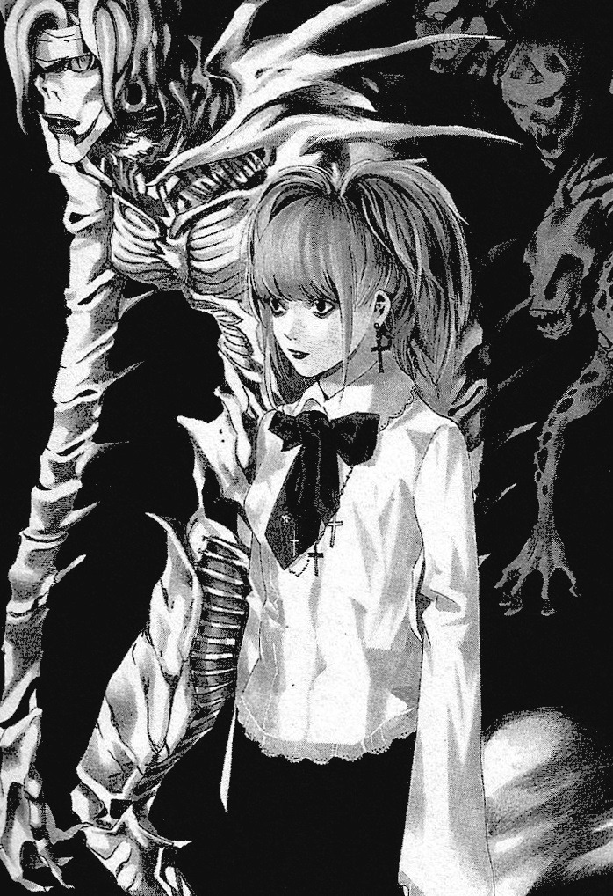
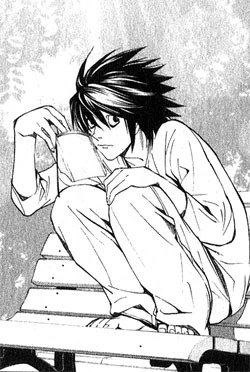
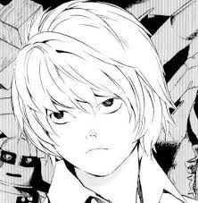
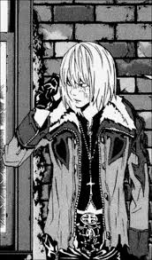
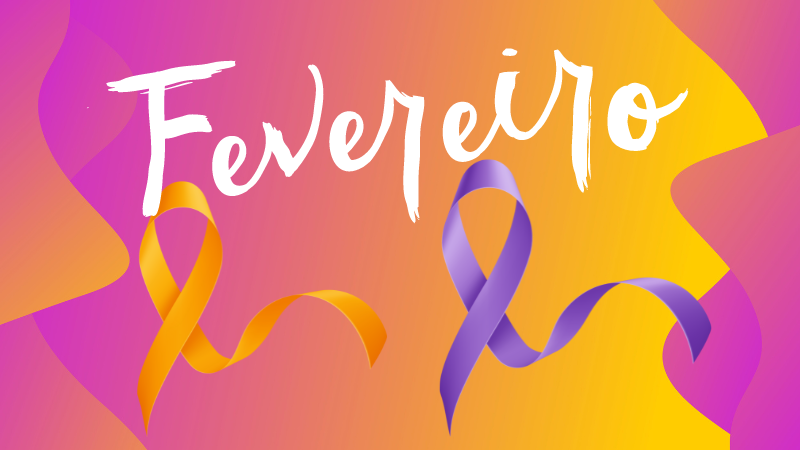

|  | |
| NOME | Light Yagami |
| NASCIMENTO | Fevereiro 28, 1986 |
| TIPO SANGUÍNEO | A+ |
| DESCRIÇÃO | |
|---|---|
| Light é caracterizado como trabalhador, talentoso e um gênio nato. Altamente perspicaz e com habilidades de resolução de problemas, Light é um planejador habilidoso e bom em mapear cenários. Além disso, Light é muito popular entre seus colegas e adorado por seus familiares. No entanto, sua alta inteligência, suas conquistas acadêmicas e os constantes elogios dos adultos estabeleceram a base para uma arrogância e arrogância inatas que rapidamente se intensificaram após ele assumir o papel de Kira. Light também lutava contra um sentimento de tédio que foi reprimido quando ele começou a usar o caderno. Assim como seu pai, Soichiro, Light tem um forte senso de justiça, mas este rapidamente se distorce após ser contaminado pelo poder do Death Note. Acreditando que o mundo está "podre", ele usa o caderno como um meio pelo qual pode executar sua vontade de livrar o mundo das pessoas más. Como Kira, o principal objetivo de Light é criar um novo mundo livre de injustiça, povoado apenas por pessoas que ele considera honestas e gentis, e governar esse novo mundo como seu "Deus". Apesar de saber da criminalidade do assassinato, Light consideraria suas ações o máximo "sacrifício" para tornar o mundo um lugar melhor. |
|
|  | |
| NOME | Misa Amane |
| NASCIMENTO | Dezembro 25, 1984 |
| TIPO SANGUÍNEO | AB+ |
| DESCRIÇÃO | |
|---|---|
| Misa é muito extrovertida e se mostra bastante popular devido à sua carreira. Ela atrai uma grande multidão ao visitar Light em seu campus universitário. Ela é hiperativa, impulsiva e infantil, evidenciada por sua tendência a falar na terceira pessoa. Apesar de ser considerada idiota por muitos, Misa demonstra ter momentos de inteligência, como quando ela engana com sucesso Kyosuke Higuchi para que ele se revele o Yotsuba Kira. Ela é muito descuidada em seus atos como o Segundo Kira, o que a leva a ser presa e confinada. Como provavelmente não sabia que o Death Note podia manipular vítimas, ela mesma enviou as fitas do Kira, mas não removeu suas impressões digitais e deixou DNA facilmente encontrado nos envelopes. Ela também ignorou completamente a ordem de Light para se manter longe dele (pois ele já era suspeito de ser Kira) e, portanto, foi vista em sua companhia — reduzindo as suspeitas de L sobre quem era o Segundo Kira. |
|
|  | |
| NOME | L Lawliet |
| NASCIMENTO | Outubro 31, 1979 |
| TIPO SANGUÍNEO | Desconhecido |
| DESCRIÇÃO | |
|---|---|
| L é bastante reservado e só se comunica com o mundo por meio de seu assistente, Watari . Ele nunca mostra seu rosto pessoalmente, representando-se com uma letra L maiúscula desenhada em "Old English MT" ou "Cloister Black". É mais provável que seja "Cloister Black", já que o "W" de Watari é diferente em "Old English MT". Após conhecer a Força-Tarefa Japonesa , ele solicita que a Força-Tarefa o chame de "Ryuzaki" como medida de segurança adicional. Nem no mangá nem no anime a Força-Tarefa descobre seu verdadeiro nome. |
|
|  | |
| NOME | Nate River |
| NASCIMENTO | Agosto 24, 1994 |
| TIPO SANGUÍNEO | B+ |
| DESCRIÇÃO | |
|---|---|
| Near é muito inteligente, apesar de sua aparência infantil e comportamento causar aos outros, como David Hoope, o questionamento de suas habilidades. Ele tem uma obsessão com a resolução de problemas complexos e vê a investigação , como se fosse resolver um quebra-cabeça. Ele é altamente observacional e já foi visto montando um quebra-cabeça que foi quase inteiramente de cor branca. Ele é proficiente quando se trata de uma multitarefa e é capaz de monitorar múltiplas telas de computador ao mesmo tempo. Near também parece ser ambidestro, jogando dardos com a mão esquerda e empilhamento de dados com sua direita. Apesar de suas habilidades de gênio, Near tem um conhecimento social baixo e é mau em interagir com os outros. Como indicado no Death Note 13: How to Read, ele só é capaz de exibir seus verdadeiros poderes dedutivos, quando ele tem o apoio de seus membros." O livro também afirma que Near está distante da sociedade, porque ele é sensível. Near é bastante co-dependente, como visto quando ele pede Rester para acompanhá-lo em seu vôo para o Japão, devido a nunca ter voado sozinho. |
|
|  | |
| NOME | Mihael Keehl |
| NASCIMENTO | Dezembro 13, 1992 |
| TIPO SANGUÍNEO | A+ |
| DESCRIÇÃO | |
|---|---|
| Embora Mello seja certamente um gênio e mais inteligente que a maioria das pessoas, o conceito de ser apenas a segunda pessoa mais inteligente da Wammy's House, apenas atrás de Near, alimenta o complexo de inferioridade que define o seu caráter. Mello beira a imoralidade com a sua obsessão em ser o único a derrubar Kira e está disposto a fazer "o que for preciso". Táticas que incluem o sequestro da filha do diretor policial japonês (Sayu Yagami), e ter um membro da máfia escrevendo os nomes da maior parte dos membro da SPK no Death Note de Sidoh. No mangá, depois de Mello roubou com sucesso um Death Note, ele vai ainda mais longe ao tentar chantagear o presidente dos Estados Unidos através do telefone em dar-lhe os fundos e recursos para ajudar a sua caça por Kira, ameaçando que, se suas exigências são não se encontraram, ele vai usar o Death Note para forçar o presidente a lançar mísseis nucleares dos Estados Unidos e começar a III Guerra Mundial. Indiscutivelmente, Mello não está mesmo tentando derrotar Kira fora de um sentido de "justiça", mas porque a captura de Kira vai provar para o mundo que Mello é realmente o digno sucessor de L como o maior detetive do mundo, e não apenas vice-campeão ao próximo, ou como Mello descreve seu objetivo em suas próprias palavras, "Eu vou ser o novo número um!" O artista de Death Note, Takeshi Obata aponta no livro Death Note: How To Read 13 que a inveja e ódio de Mello por Near era unilateral, e que Near "honestamente gostava de Mello". O livro afirma que Mello não é puramente mal, citando o seu pedido de desculpas e cuidado genuíno para o bem-estar de Matt, assim como no início da série, quando ele pede desculpas a Soichiro Yagami. Ele também afirma que Mello tem uma excelente ideia e que ele às vezes deixa suas emoções ficarem no seu caminho. Tsugumi Ohba, o escritor de Death Note, afirmou que Mello trabalha duro para tudo. |
|
|  | ||||||
| FEVEREIRO 2025 | ||||||
|---|---|---|---|---|---|---|
| DOMINGO | SEGUNDA | TERÇA | QUARTA | QUINTA | SEXTA | SÁBADO |
| 1 | ||||||
| 2 | 3 | 4 | 5 | 6 | 7 | 8 |
| 9 | 10 | 11 | 12 | 13 | 14 | 15 |
| 16 | 17 | 18 | 19 | 20 | 21 | 22 |
| 23 | 24 | 25 | 26 | 27 | 28 | |
|
||||||